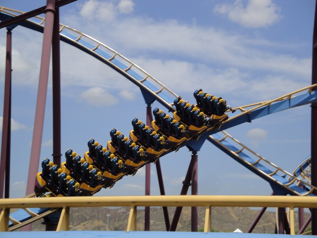
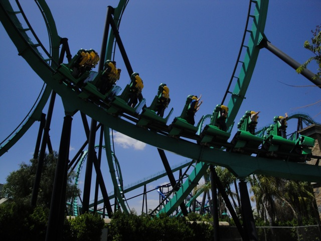
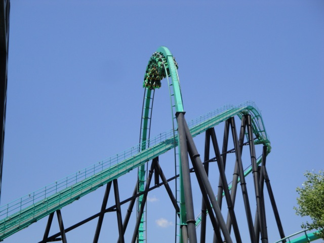
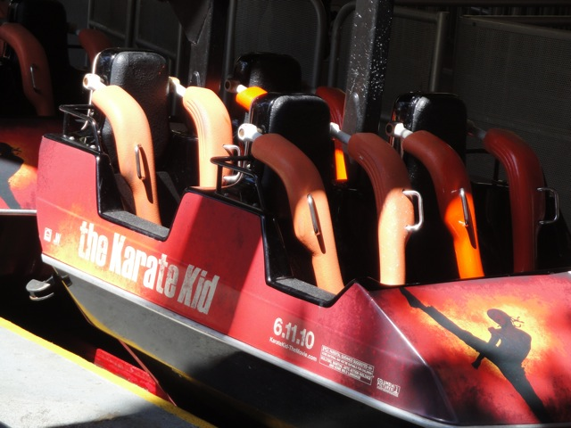
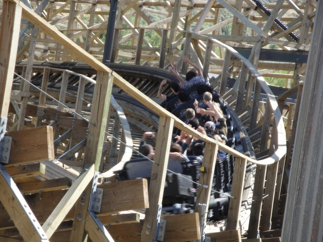
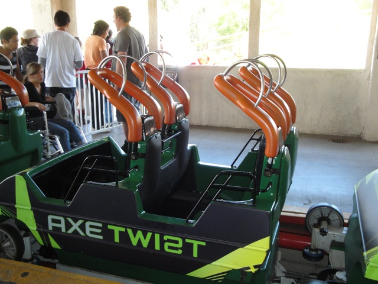
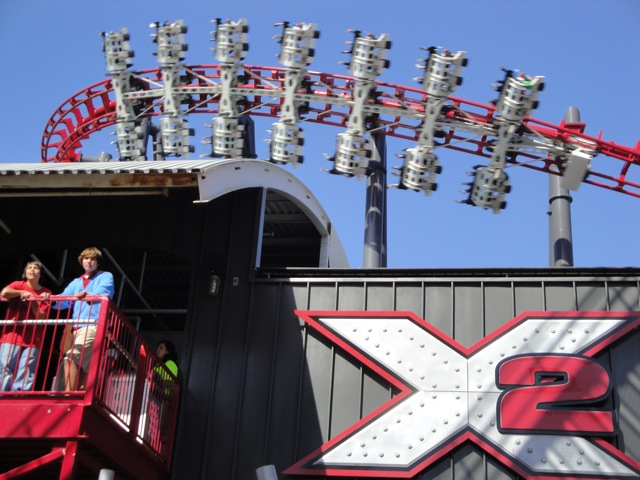

June SFMM 2010
So, today, we went off to SFMM. Now Cody was supposed to ride his bike all the way to SFMM, but he ended up getting a flat tire in Fillmore and had to get a ride the rest of the way there.
Oh crap!!! I completely forgot!!!! Here Thomas, take this pocket lint. Happy Birthday, from the people of Incrediblecoasters.
 We managed to get a marathon on Goliath since nobody was at the park today.
We managed to get a marathon on Goliath since nobody was at the park today.
 Up next, Scream.
Up next, Scream.
Yeah. These are the crowds I'd like to see all the time.

Scream was fun, but it made me miss Medusa.
I can't help it!!! It's so tempting!!!
That's weird. I guess Biohazards make your hair turn pink.
 It also turns B&M Inverts Blue. Batman is still suffering from it's contact with the Biohazard 6 months ago.
It also turns B&M Inverts Blue. Batman is still suffering from it's contact with the Biohazard 6 months ago.
I certainly hope that Studio 6F doesn't get pushed back till 2011 like *cough*Mr. Six*cough*

Next ride of the day would be Riddlers Revenge.

Riddlers was running good. As usual.
Cody decided to go back to his old ways and soak himself on Tidal Wave's bridge. Not a smart idea.
But look at that!! He comes out completely dry.
Not only does Goldrusher now have its gum lifthill back, but now it's got a teddy bear there as well!!!
 "Hey you with the camera! Have you seen my teddy bear?"
"Hey you with the camera! Have you seen my teddy bear?"
 Hmm. There's something different about Ninja.
Hmm. There's something different about Ninja.
Oh yeah. Ninja is now sponsered by the Karate Kid.
 Unlike Viper's old Hair Gel trains which made you want to claw your eyes out, these new Karate Kid wraps arn't half bad.
Unlike Viper's old Hair Gel trains which made you want to claw your eyes out, these new Karate Kid wraps arn't half bad.

Nice Wraps. Sh*tty Movie.
You fail Six Flags.
Continuing on the no wait tradition of the day is Terminator.
Someone call a doctor!!! Cody's turning into a Terminator!!!
 Station Fly By Goodness.
Station Fly By Goodness.

Unfortunetly, the audio on Terminator is now officially gone. =(
Revolution was running Ok today.

In other news, the Hair Gel trains are now officially gone from Viper forever. (YAY!!!!!!!!!!) Now, they have these Axe Trains which look MUCH better.
No dude. They hated you.
 HA HA!!! Goliath got stuck!!
HA HA!!! Goliath got stuck!!
 And of course, we made sure we got on X2.
And of course, we made sure we got on X2.

No matter what sort of downgrades Six Flags Magic Mountain does to their wooden coasters or how long they postpone simple projects, at least they've always got this awesome ride.
Oh, and during our day at SFMM, our parking receipt got sunburnt. Yes, our Parking Receipt got sunburnt. I've looked on the internet, and can't find anything about sunburt or tanned parking receipts. Strange. =/
Home